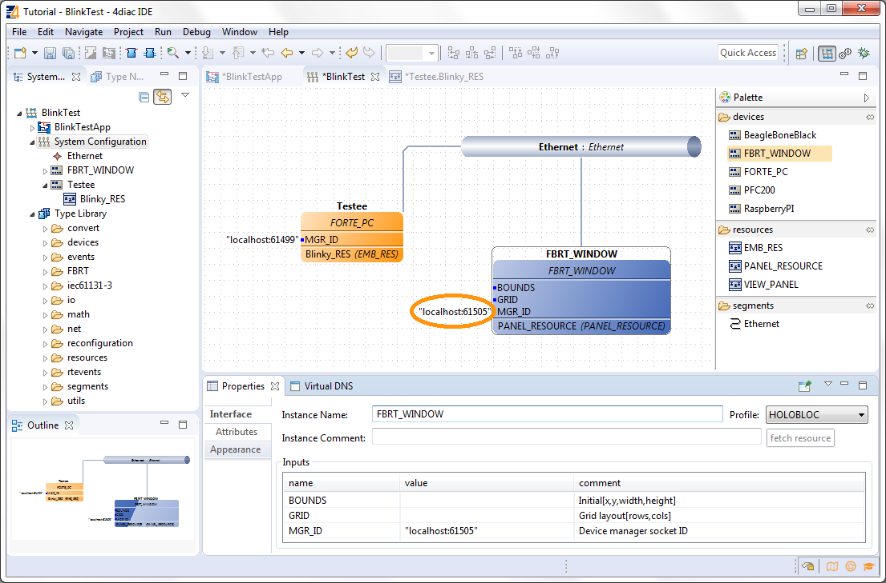

This page is part of a guide that gives a walkthrough over the major 4DIAC features.
This guide adds a Start and Stop control to the Blinking application created in Step 1. Normally you would put two buttons that would serve as inputs to the PLC and control the Blink application. In this following example, it will be shown how to detach the buttons from the same Hardware and make them run separately. For now, the example still uses the local computer. But the Blink application will run on a FORTE instance and the input buttons will run on a FBRT instance (if you don't know what it is or you've forgotten, here the quick access). The two different program running on the local machine emulate two PLCs. See the architecture below.

First, add a new device to the System Configuration. Go to it, and Drag and Drop a FBRT_WINDOW (1) next to the FORTE_PC, and connect it to the Ethernet sement. It already comes with a resource called PANEL_RESOURCE. The MGR_ID (2) is very important to change, since by default it has the same IP:PORT as the FORTE_PC. Change it to localhost:61505. This means that the FBRT will run locally (localhost) and will listen at the port 61505, a different one from the 61499 from FORTE_PC.
Back in the Application, because FBRT is written in Java and supports graphical interface and other FBs, there's a folder called FBRT in the Palette that contains special FBs that only work on it and not in FORTE. In a Subfolder is the hmi folder and inside of it you can find the IN_EVENT FB.
You can see the stripped line instead of the solid that connect FBs that run in diffent devices. This means that the event doesn't go directly. Since the communication of these events is not implicit, we must complete the application in both devices to handle this broken connections.
Here's what the last steps means. Every time you click the button in the FBRT, an IND event is generated. The PUBLISH_X FBs are used to send messages throught the network. Every time a REQ is triggered, a message is sent according to the ID. In the ID you can specify if you want to use a specific network protocol like MQTT, OPC, etc. If you don't specify anything, the default defined in the Compliance Profile is used. The number X in PUBLISH_X is the number of data that you want to send as message, and since we are sending only an event here, and no data we used PUBLISH_0.
The selected ID specifies an IP:PORT pair. The used Compliance Profile says that we should use UDP sockets in a certain range. The selected 239.0.0.1 and port 61000/1 have nothing to do with the localhost:61499 or localhost:61505 used for the device. The first are a UDP connections used to send events between devices, and the latter are TCP connections to connect to 4DIAC to upload applications and manage them. Take care of not using the same pair for different UDP sockets.
This is like the mirror of the step before. Each subscriber listen to a specific UDP IP:PORT. These are the same as used in the GUI. This means that when you press the START button, an event will be sent to a specific IP:PORT using UDP, and since the Blinking device is listening to the same IP:PORT, it will get the event, triggering in the application.
Similar on how it was done to deploy the Blink application is done for two. The only difference is that in this case we launch 1 FORTE instance and 1 FBRT instance in the Deployment Perspective. First set Windows → Preferences → 4DIAC → FBRT Preferences to the fbrt.jar file located under runtime/FBRT in your 4DIAC folder.
Do the debugging similar on how it was done in the Blink example. You should see the blinking only after you pressed the start button, and it should stop when pressing the other button. Attention!: You cannot monitor FBRT, only FORTE, because it's a feature only present on it.
In the next step you will see how FORTE runs in another machine.
If you want to go back to the original Blinking application without buttons, here's a link
Step 1 - Use 4DIAC-IDE locally
If you want to go back to the Start Here page, we leave you here a fast access